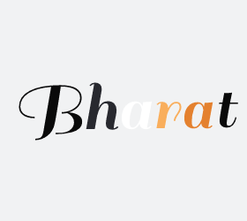

|

bharatrunwal@gmail.com
|
I am a Final Year Undergraduate at IIT Delhi pursuing my B.Tech in Electrical and Engineering.
My research interest spans Adversarial Robustness,Network Sparsity, self-supervised learning and machine learning
I am also a researcher at Landskape-Ai where i broadly work on theoretical deep learning and applied computer vision.
In the past I have been fortunate to work with the likes of Prof. Gerad De Melo from HPI Potsdam, Germany in the field of NLP and Prof. Özgür B. Akan from Koç University, Istanbul, Turkey & Dr Oktay Cetinkaya in the domain of Molecular Communication.
CV /
GitHub /
Twitter /
Linkedin /
|

|
|
Ticket2Dense Hypothesis
Bharat Runwal,
Diganta Misra ,
Gintare Karolina Dziugaite
|
|
APP: Anytime Progressive Pruning
Diganta Misra ,
Bharat Runwal,
Tianlong Chen,
Zhangyang Wang
|
|
Constrained sampling adversarial training
Diganta Misra ,
Bharat Runwal,
Yash Sharma,
Pin Yu Chen
|
|
Anytime Reprogramming using mapping agents
Pin Yu Chen,
Huck C.-H. Yang,
Diganta Misra ,
Bharat Runwal,
Irina Rish
|
|
What makes an augmentation a good augmentation?
Bharat Runwal,
Muawiz Chaudhary,
Diganta Misra
|
| |